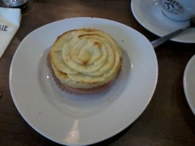
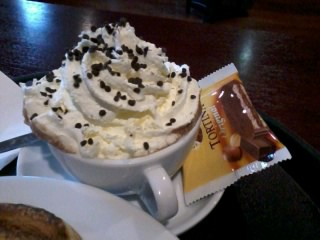
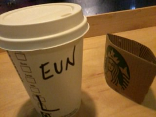
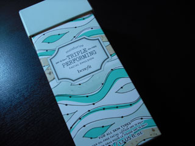
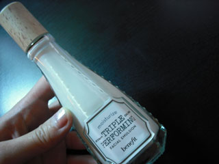
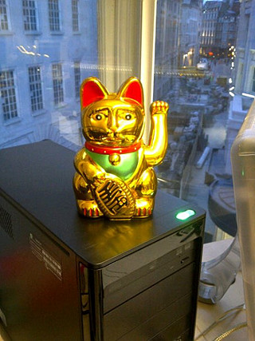

저번주 날씨 좀 풀리고
해가길어져서
일끝나고 매일매일 싸돌아댕겼더니
입안이 헐었다 ㅡㅡ;;
누가보면 음청 허약한줄 알긋어;;;
하긴 전에 엄마님께서 허우대만멀쩡했지
저걸 어따써먹냐고 그랬었지........OTL
회사가 센트럴에 있으니까 좋은점은
일끝나고 돌아다닐곳이 많다는것
나쁜점은 매일 관광객들에게 치여야 한다능......OTL


식생활이 문제였었나 싶은게
저번주 내리 주식이 케키+아이스크림.....OTL
저녁에 와~날씨 따닷해진다
해가길어진다~이러면서 마구 돌아댕기니까
저녁은 대충 커피 내지는 아이스크림으로 해결 ㅡㅡ;;;;

코벤트가든서 커피주문했더니 이름물어봐서
컵에 이름써준다 ㅋㅋ
아마 항상 사람이 붐비고 대기자가 많아서 그런듯^^
위기의식을 느껴서 오늘 과일이랑
한인마트서 김치 / 반찬종류 열심히 쟁여왔다
월요일에만 불타오르는 요리혼 ㅋㅋㅋㅋ
................이렇게 살면 안되는데 말입니다;;;;쩝;;;
일요일 비온후에 추워져서
이번주는 즉시 귀가예정^^;;
덧붙여 아침에도 촘 일찍인나서
우아하게(.......;;) 커피한잔 마시고 회사가고싶다 ;ㅂ;
(오늘 하루는 성공했는데 이게 금요일까지 잘 이어지길^^;;;)


수분크림 계속 키엘써오다가
누가 이거 좋다는 말에 또 팔랑귀 팔락거리면서 구입해봤음
Boots내 매장이 있어서 포인트적립이 용이하다는것도 한몫^^;;;
향이 늠 좋다~//ㅅ//

Our new accountant! 란 말과함께 보스가 사온
마네키네코(lucky cat) ㅋㅋㅋㅋㅋㅋㅋㅋㅋㅋ
표정 왜저리 억울해보이지 ㅋㅋㅋㅋㅋㅋㅋㅋ
그럼 다시 또 일주일~!!!